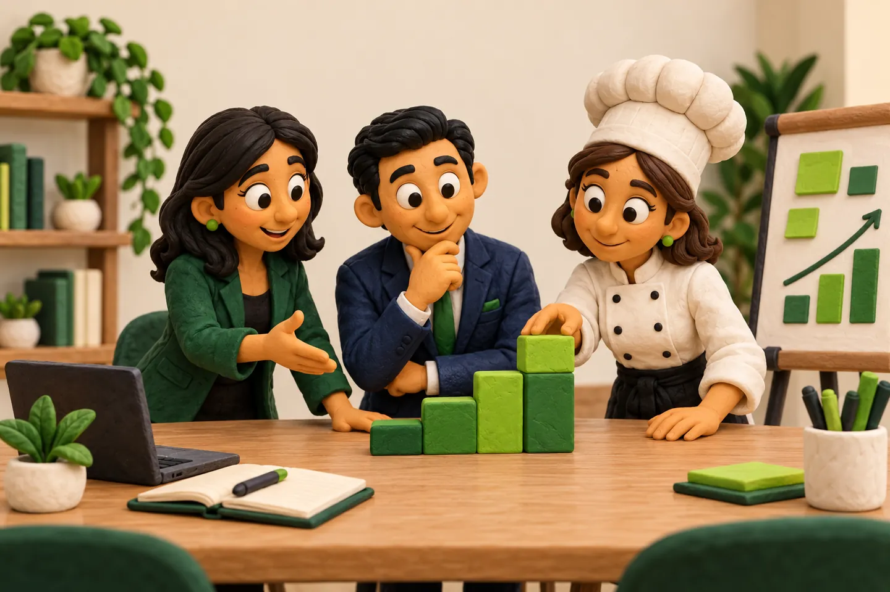
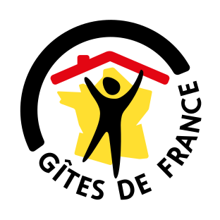
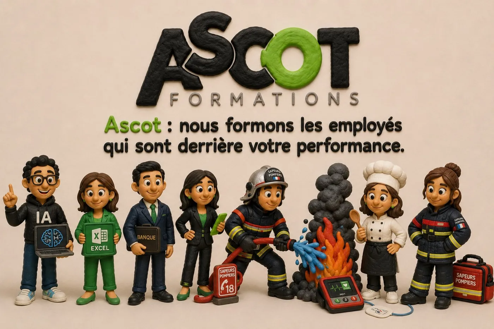

Un titre de formation, sur une seule ligne.
Une phrase de périmètre, en 15 px et 650 px de large au maximum.
Parlons de votre projetAplats francs, angles droits, filets d’un pixel, typographie du système. Ce document décrit le système visuel ; toutes les valeurs citées sont les jetons réellement lus par le site.
Quatre partis pris structurent toutes les pages. Ils tiennent le style sans dépendre d’une image, d’une ombre ou d’une police externe.
Papier clair pour lire, vert sombre pour affirmer, argile pour les visuels. Aucun dégradé, aucune ombre portée.
Aucun arrondi, sauf le point de la frise et les pastilles. Un filet d’un pixel sépare ce qui doit l’être.
Graisse 750 et interlettrage négatif : plus le titre est grand, plus il se resserre. Le texte courant reste en graisse 400.
DejaVu Sans puis Arial. Aucune police n’est téléchargée : la page ne dépend d’aucun service tiers pour s’afficher.
Le vert d’accent n’est jamais un aplat de texte long : il souligne, numérote et signale l’état actif.
Contraste à connaître : --green sur --paper donne 2,5:1. C’est suffisant pour un filet, un numéro de chapitre ou un état actif repéré autrement (position, soulignement), pas pour un paragraphe. Le corps de texte reste en --ink (14,3:1) ou --muted (6,3:1), le texte sur fond sombre en --pale (9,7:1) ou --leaf (9,7:1).
Arial et DejaVu Sans sont présentes partout : la page s’affiche sans requête réseau et sans substitution visible.
h1 clamp(38 → 60 px) · h2 clamp(32 → 46 px) · h3 27 px · h4 20 px · interlettrage −1,5 → −0,3 px
Des formations utiles, construites autour de votre quotidien et des compétences qui comptent vraiment.
Courant 16 px, interligne 1,6 · secondaire 15 px · légende 13 px · libellé capitales 10 px, interlettrage 2 px
Un h1 par page. Les niveaux ne sautent jamais : un h3 ne suit pas un h1 sans h2. Les titres sont serrés par l’interlettrage, jamais par une graisse supérieure à 750 — au-delà, Arial synthétise et le texte s’épaissit.
Boutons, onglets, étiquettes, champs, alertes, cartes. Chaque pièce est décrite ici puis reportée dans la feuille partagée.
Carré, 12 px, 17 × 22 px de marge interne. Primaire vert clair, secondaire contour, sombre pour une action neutre (fermer, télécharger). Jamais plus d’un bouton primaire par écran.
Filet de 3 px sous l’onglet actif, en plus de la couleur. Le nombre de résultats est annoncé dans une zone role="status".
01 / Comprendre
Le numéro d’étape ouvre un bloc, il ne décore pas un titre.
Étiquette : capitales 10 px, contour d’un pixel. Numéro de chapitre : 12 px, graisse 750, --green.
Message d’erreur : désigné par aria-invalid, pas seulement par la couleur.
Une précision utile à la lecture, sans urgence.
Ce qui bloque et ce qu’il faut corriger.
Un filet suffit à détacher la carte du fond.
La vignette est au format 3/2, le numéro vient du compteur CSS, le titre est en 27 px. C’est la brique de la page d’accueil.

Une phrase de périmètre, en 15 px et 650 px de large au maximum.
Parlons de votre projetLe filet supérieur sépare l’étape de la précédente ; le numéro est en vert clair.
Sur fond sombre, le texte secondaire passe en --pale, jamais en --muted.
Une étape tient en un titre et deux phrases.
Quatre briques de l’accueil : la confiance (logos clients et certification), le terrain (photos légendées), les retours clients et les questions fréquentes. Aucun jeton nouveau — mêmes filets, mêmes aplats, mêmes angles droits.

Bandeau de confiance : quatre emplacements de même hauteur (122 px), logo contenu à 185 × 72 px au maximum. La certification est un bloc encadré, jamais un badge flottant.
Deux photos légendées, en 1,3fr / 1fr, rapport 3/2, recadrage object-fit: cover. La légende reste en 12 px, sous le filet de l’image.
Retrouvez ici prochainement la note Google d’ASCOT et les retours de ses clients.
Note et nombre d’avis à vérifierCette zone accueillera une sélection d’avis Google authentiques : texte exact, prénom ou nom affiché, date et lien vers la source.
Panneau d’avis : colonne sombre pour la note, colonne papier pour les verbatims. Les zones encore vides portent une étiquette de repérage, jamais un faux avis.
Précisez le lieu, le thème, le nombre de participants et les équipements disponibles. Ces éléments permettent de définir les modalités de la session avec vous.
Vos objectifs, les outils utilisés et les situations rencontrées au travail servent de point de départ pour construire un parcours adapté. Échangeons sur votre situation.
Questions fréquentes : <details> / <summary> natifs — ouverture au clavier, au doigt et par la recherche du navigateur, sans JavaScript.

Le héros photo, la frise des univers, le bandeau de confiance, les formations en lignes, les étapes, le bloc terrain, le bloc entreprise, les avis, les questions, l’appel encadré, l’image de clôture et la fenêtre modale. La page d’accueil est la démonstration vivante de ce document.
Une seule action, jamais deux.
Le <dialog> natif gère le focus, la touche Échap et l’inertie du fond. La fermeture porte un libellé.
Écarts assumés par rapport à la maquette d’origine : la maquette empile tout dans une colonne de 1440 px, le site garde ses sections pleine largeur avec la même colonne de contenu ; le logo est posé à sa hauteur réelle au lieu d’être rogné ; le bouton de rubrique reste sur une ligne en mobile au lieu de passer sur deux ; les blocs de confiance, de terrain, d’avis et de questions suivent la même colonne de contenu au lieu d’être encadrés. Hauteurs mesurées contre la maquette : 8288 / 7476 / 9951 px contre 8285 / 7473 / 9946 px (1440 / 960 / 390).